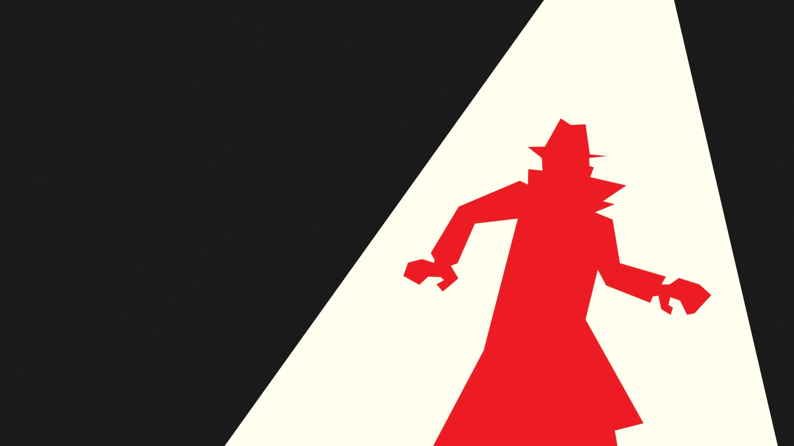
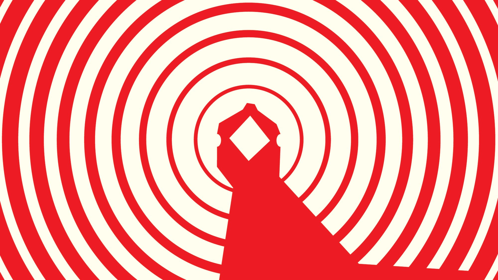
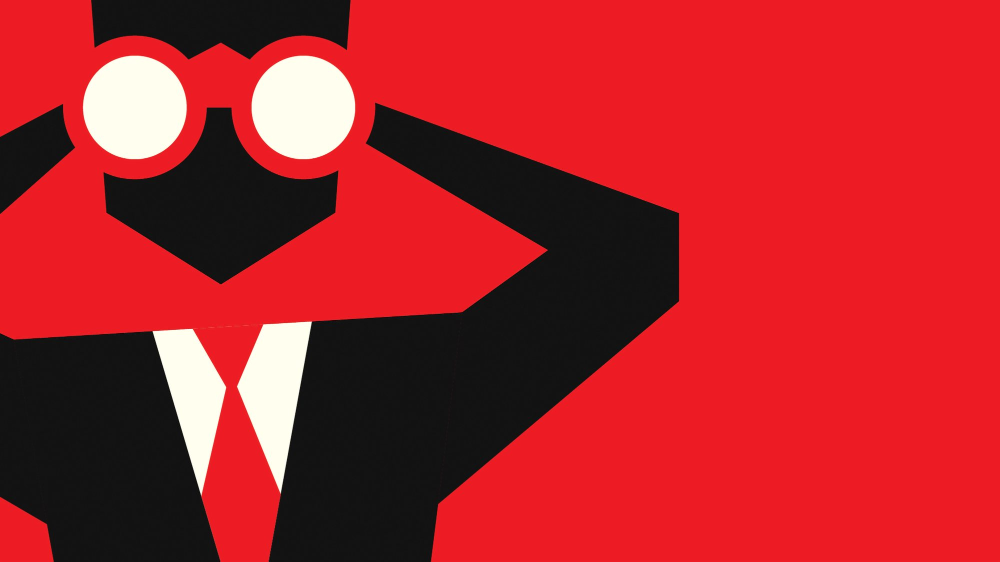
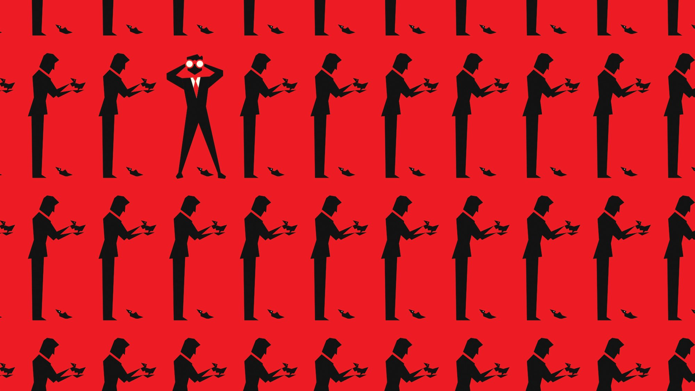
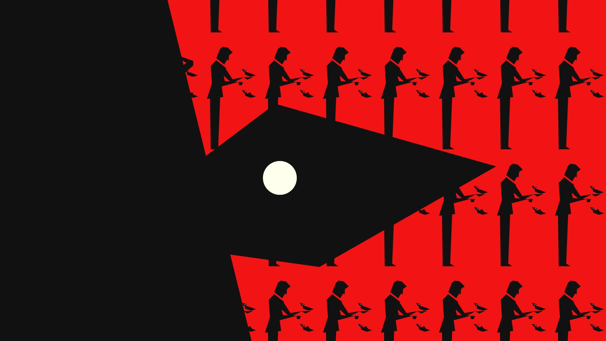
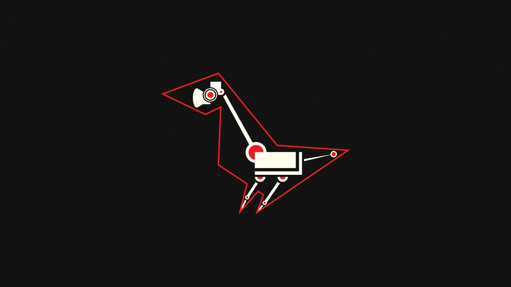

Birds Aren't Real
A PSA for my motion design class, and an excuse to give the internet's favorite conspiracy the Saul Bass treatment.
Gold Award — Graphis New Talent Annual 2021
Overview
When tasked with creating a PSA for my motion design class, I chose an issue that was of paramount importance to the American people. In reality, I've always enjoyed the satire and humor that the Birds Aren't Real movement has brought to the internet. It also gave me a chance to draw on a classic spy aesthetic inspired by Saul Bass.
If it flies, it spies.
I've always loved old spy movies, and when I was formally introduced to the work of Saul Bass in college, I couldn't move on until I had worked it out of my system. This project provided a nice opportunity for that.





